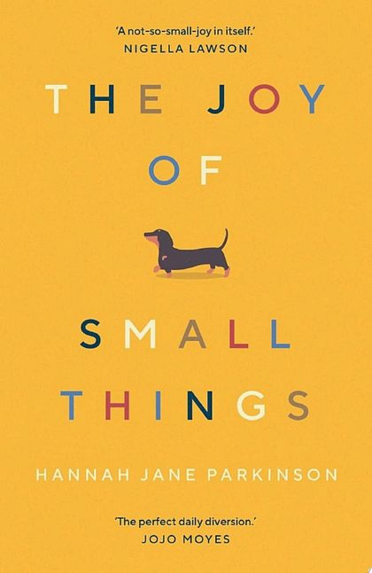

the joy of small things
Faber & Faber
Listen
Listen on AudibleMonthly pick or purchase · English editionSearch on StorytelNot checked yetSearch on BookBeatNot checked yet
Links and plan info checked 24 November 2026

Faber & Faber
Links and plan info checked 24 November 2026